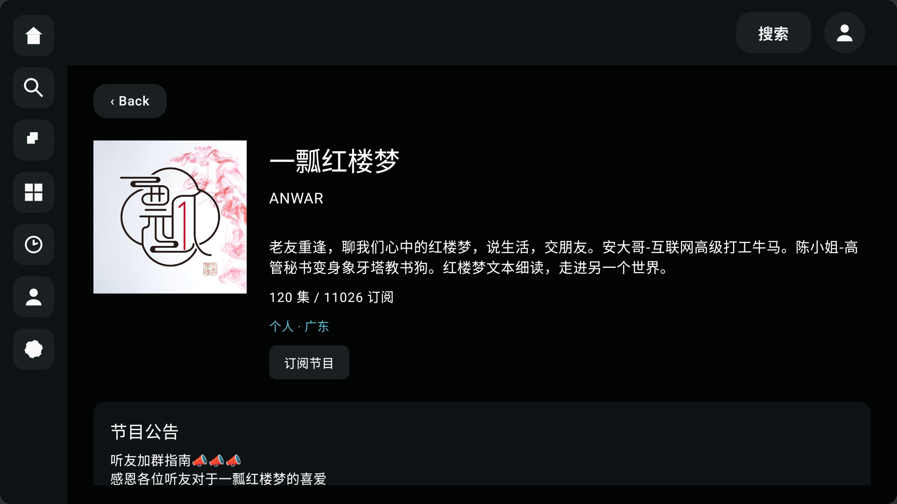

Live 音视频方向
王梓琦
两年内容运营经验，加上业余时间自己动手用 AI 做工具的习惯，让我既能理解「一个场景该怎么设计」，也能使用 AI 将重复劳动变简单。 这份名单整理了我目前会的三件事，以及接下来最想深入做的三个方向。

向下滚动
两年内容运营经验，加上业余时间自己动手用 AI 做工具的习惯，让我既能理解「一个场景该怎么设计」，也能使用 AI 将重复劳动变简单。 这份名单整理了我目前会的三件事，以及接下来最想深入做的三个方向。
日常工作中经常需要核对不同语种的录音内容，逐句听译效率很低。为此我独立开发了一款带图形界面的转录工具，支持泰语、日语、韩语、维吾尔语、西班牙语等小语种。

针对标注平台使用中反复翻找内容、肉眼比对困难等问题，开发了一款浏览器插件来提升操作效率。

工作之外也一直保持独立开发的习惯，做过播客类电视端 App、自媒体视频自动化产出工具等项目，从产品设计到开发实现都独立完成。



曾在网易云音乐负责内容运营两年，长期负责 二次元、游戏音乐、日系、摇滚、粤语 等垂类内容，参与过标签体系的搭建。此后从事多模态数据工作，也积累了对语音场景的实际判断经验，例如说话人的情绪、语气、环境声音与上下文是否连贯等。
结合这些积累，接下来希望重点投入的数据构造方向包括：
· 二次元与游戏相关的对话数据——此类场景用户提问密度高、专有名词和梗较多、追问频繁，适合用于检验模型对垂类内容的理解深度与多轮对话的稳定性；
· 兴趣陪伴类场景——结合以往「理解用户兴趣、组织内容供给」的经验，构造「用户表达兴趣、模型能够承接并延展话题」类的对话数据；
· 模型声音上的情绪表达——关注模型在语音输出中能否恰当传递情绪与语气，比如安慰、调侃、惊喜等不同场景下声音的表现是否自然、是否贴合语境，这也是 Live 场景下影响用户体验的关键一环；
擅长将这类内容构造工作沉淀为 可复用的场景库与执行标准，而不只是单次产出。
重点是二次元、游戏、兴趣陪伴等常见对话场景的内容设计，以及把这些经验整理成可以反复用的模板和标准，而不是每次都从零开始写。
专门看「AI 做得不好的地方」到底属于什么类型的问题，以及怎么把这些反馈整理成算法侧能直接用上的信息。
方言、口音、多语种、嘈杂环境这些常见的语音理解难点，正好是我做转录工具时积累下来的经验可以直接用上的地方。